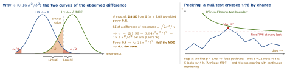

engineering · folio
In one line: An A/B test is a hypothesis test on randomised groups. You fix α (false-positive rate), power 1-β (chance to detect the MDE if it is real) and the MDE before starting — together they fix the sample size. Then you prove the experiment is valid (SRM, exposure) before reading the effect, read it once at the planned horizon (unless the test was built for peeking), and report the effect with its confidence interval, not a bare p-value.
Download PDF Print view LaTeX source


The vocabulary, exactly
- p-value = P(a difference at least this extreme | H0 true). Not P(H0 | data), not “95 % sure it works”.
- α (0.05) = false-positive rate you accept when there is no effect (Type I). β = chance of missing a real effect of size MDE (Type II); power = 1-β, usually 0.8.
- MDE = smallest effect worth shipping and the one the test is sized for. Say whether it is absolute (+0.5 pp) or relative (+5 %).
- 95 % CI excludes 0 ⇔ p < 0.05 (two-sided). Report Δ ± CI. Not significant ≠ “no effect” — only “smaller than we could see”.
Sample size & duration — worked
- Conversion: σ2 = p(1-p). Baseline 10 %, MDE +0.5 pp: 16 ·0.09 / 0.0052 = 57 600 per arm (exact: ≈56 500).
- Duration = n ÷ exposed users per arm per day, rounded up to whole weeks (weekday / weekend behaviour differs).
- Metric per session but randomised per user? Sessions of one user are correlated → the naive variance is too small; use the delta method or bootstrap by user.
from scipy.stats import norm, chisquare
def n_per_arm(p, mde, alpha=0.05, power=0.8):
z = norm.ppf(1 - alpha / 2) + norm.ppf(power)
return 2 * z**2 * p * (1 - p) / mde**2
n_per_arm(0.10, 0.005) # 56 512 per arm
chisquare([50_800, 49_200]) # stat 25.6, p ~ 4e-7: SRMPeeking & sequential testing
- Fixed horizon: pick n, look once. Simple, and the default.
- Group sequential (alpha spending, O’Brien–Fleming-type): planned looks, very strict early, near 1.96 at the end.
- Always-valid p-values / mSPRT: built to be monitored continuously, at the cost of power. Stopping for harm (guardrail breach) at any time is fine.
Sample-ratio mismatch (SRM)
- χ2 goodness of fit of the user counts against the designed split (1 df for 2 arms): χ2 = ∑(O-E)2/E. 50/50 over 100 000: 50 800 vs 49 200 → χ2 = 25.6, p ≈4·10-7.
- Microsoft’s platform flags p < 0.0005 and hides results until it passes (Fabijan et al., KDD 2019). An SRM voids the result — find the bug, don’t reweight.
- Causes: bucketing bug, one arm crashing (telemetry lost), bot filtering, a trigger the treatment itself changes, late exposure logging.
Effects that fool you
- Novelty: users poke the new thing because it is new — the lift decays. Primacy / change aversion: habit makes the new UI lose at first — the lift grows. Detect: effect by day and by first-exposure cohort; new vs returning users; run ≥ 2 weeks.
- Twyman’s law: a result that looks too good is usually a bug — check before celebrating.
- Simpson’s paradox: pooling days with different splits (1 % → 50 % ramp) can reverse the sign — analyse per stage or keep the split fixed.
Guardrails & multiple comparisons
- One pre-registered primary metric (the decision), secondary metrics to explain it, guardrails that must not regress: crash-free users, hang rate, latency, revenue, uninstalls; trust guardrails: SRM, exposure rate.
- 20 metrics, no real effect, α = 0.05: P(at least one “win”) = 1-0.9520 ≈ 64 %. Fixes: Bonferroni α/m (family-wise), Benjamini–Hochberg (false discovery rate). Segment slicing too.
CUPED — variance reduction
- Y’ = Y - θ (X - E[X]), X = the same metric in the pre-experiment period, θ= cov(X,Y)/var(X).
- Unbiased (X is fixed before assignment); variance × (1-ρ2). ρ= 0.7 → 0.51 → about half the users for the same power. Bing measured ≈50 % (Deng et al., WSDM 2013). Brand-new users have no X → little gain for onboarding tests.
Mobile-specific pitfalls
- Version adoption lag: only the new build can expose; early updaters may not look like everyone.
- Assignment unit: install id re-randomises on reinstall / second device; logging in mid-test swaps the id → one person sees both arms. Post-login features: user id.
- Offline exposure logging: events queue and arrive late or never (uninstall, crash). A crashier arm loses its telemetry → SRM and a flattering metric. Set a late-arrival cutoff.
- Cached flags: a new assignment applies at the next launch; users who never relaunch are never treated → log exposure when the variant renders, analyse exposed users only.
Traps
- “p = 0.03 means 97 % chance B is better” — no: it is P(data | no effect).
- Extending a test “until it’s significant” (peeking); reading the metric before the SRM check.
Remember 16σ2/δ2 per arm · SRM first · look once or go sequential · one primary + guardrails · CUPED · exposure on render.